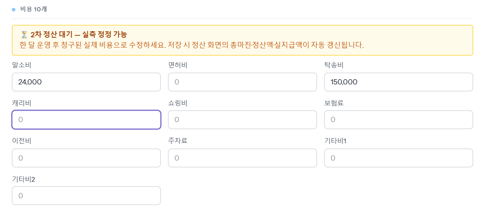
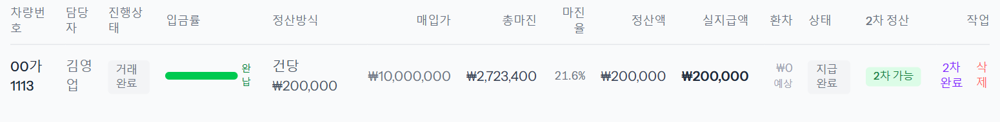
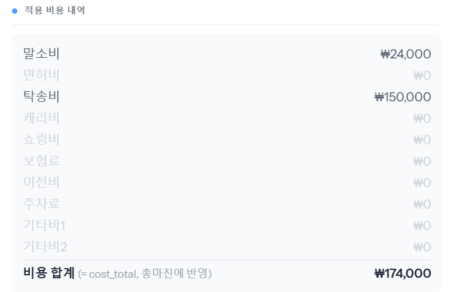

1차 정산을 지급한 뒤, 한 달쯤 지나 명세서로 청구된 실제 비용(탁송비·면허비 등)을 넣고 정산을 마무리하는 단계입니다. 재무가 합니다. 비용을 넣으면 정산 목록의 「2차 정산」 칸이 「비용 대기」 → 「2차 가능」으로 바뀌고, [2차 완료]를 누르면 「최종 마무리」가 되며 회계 칸이 잠깁니다.
2026-11-14 로컬 화면에서 「재무」 계정으로 앞 씬의 예시 차량 00가1113(거래완료 · 정산 지급완료 · 사내직원 건당 200,000)을 실제로 저장하며 찍었습니다. 탁송비 금액은 가이드용 예시입니다.
지급완료된 정산은 맨 오른쪽 「2차 정산」 칸에 노란 「비용 대기」가 붙습니다. 아직 지급 뒤에 들어온 비용이 없다는 뜻입니다.
지급이 끝난 차라도 2차 대기 동안은 비용 칸 위에 노란 띠 「⏳ 2차 정산 대기 — 실측 정정 가능」이 뜨고 비용을 고칠 수 있습니다. 명세서에 적힌 금액을 해당 칸에 넣습니다(예시는 탁송비 150,000).

[수정 저장]을 누르면 「차량 정보가 수정됐습니다.」가 뜹니다. 매입가·판매가·환율은 재무 계정으로 바꿀 수 없고, 바꿔도 저장할 때 원래 값으로 돌아갑니다 — 비용 10개만 고칩니다.
지급 뒤에 비용이 실제로 바뀐 정산은 「2차 정산」 칸이 「2차 가능」으로 바뀝니다. 총마진도 바로 다시 계산됩니다(예시 2,858,400 → 2,723,400 — 탁송비 150,000 × 0.9 만큼 줄었습니다).

「적용 비용 내역」에 방금 넣은 비용이 들어가 있는지 봅니다(말소비 24,000 + 탁송비 150,000 = 비용 합계 174,000).

아래 「2차 차액」 칸이 이번 마감으로 생기는 차이입니다. 예시 차량은 사내직원 건당 정산이라 비용이 늘어도 정산액이 그대로여서 차액이 0원입니다. 비율 정산(프리랜서)이면 비용이 바뀐 만큼 차액이 생기고, 마감할 때 그 금액이 다음 달 정산으로 넘어갑니다(이월).
「2차 정산을 최종 마무리하시겠습니까? 이후 회계 컬럼 잠금됩니다.」 확인 창이 뜨고, [확인]을 누르면 「2차 정산」 칸이 회색 「최종 마무리」가 됩니다.